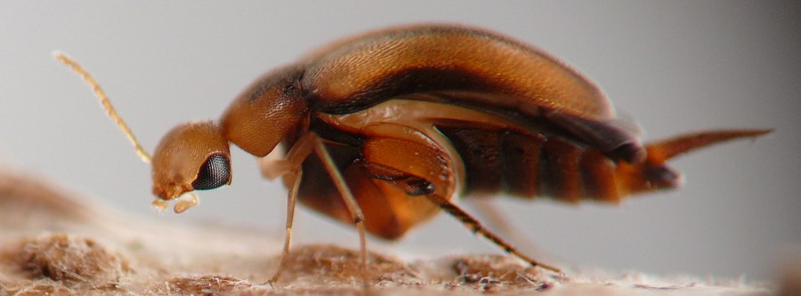
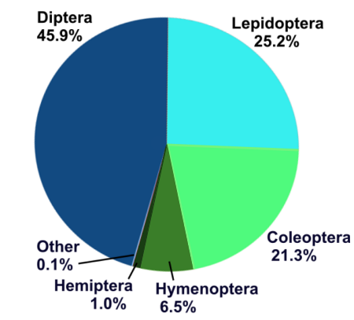
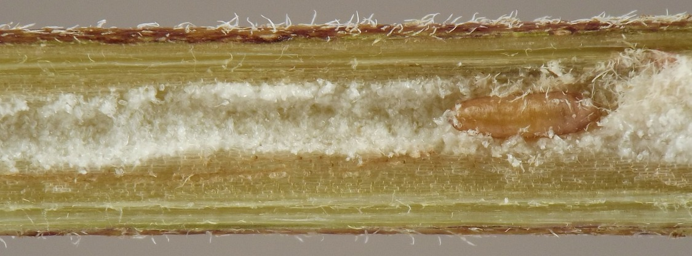
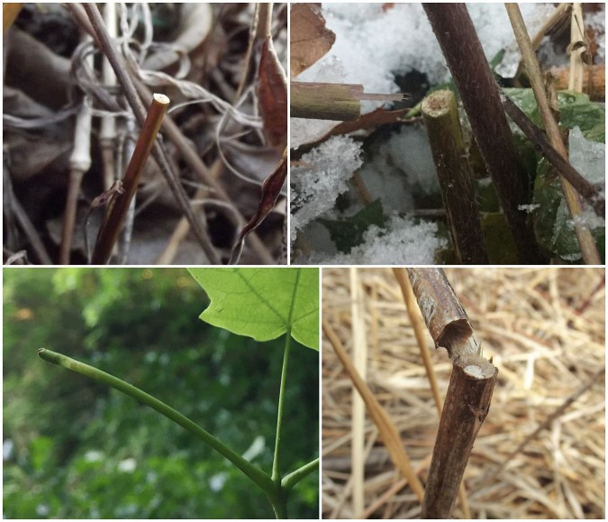
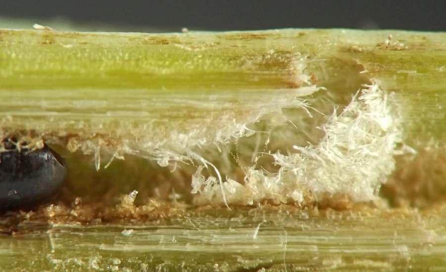
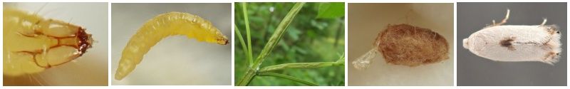
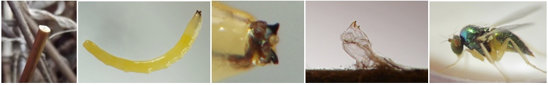

Results

By the numbers
TopAs of mid-March 2026 I have documented nearly 800 associations involving an endophagous insect species feeding inside a stem or stemlike structure of a plant species in the study area. I lumped some records together -- such as mutiple host plant species in a host genus that all accommodate the same species of insect -- so the total number of unique associations between an insect species and a plant genus sits at roughly 710 currently (March 14, 2026).
These 710 records involve about 265 host plant genera, spanning grasses, forbs, vines, shrubs, and trees. Approximately 82 of these records occurred on woody plants, and the remaining 628, comprising about 88.5% of the total, occurred on herbaceous plants. The stem was the most common plant part affected (77% of records), followed by petiole (16%) and midrib (6%), but there may be overlap in these figures since some insects migrated between plant parts over the course of their feeding.
Of the feeding mode labels I assigned to the insects in the 710 records, 50% were borers for all or part of their feeding activity, 22% were miners, and 28% were local feeders (with the percentages again not mutually exclusive, especially between the miners and borers since some insects conducted both mining and boring). The feeding mode definitions I used in the survey are specified in the Introduction.

For approximately 690 records, I was able to determine the basic taxonomy of the insect. Diptera accounted for 45.9% of the total, followed by Lepidoptera (25.2%), Coleoptera (21.3%), Hymenoptera (6.5%), and Hemiptera (1.0%). Beetles and moths in woody stems are probably somewhat undercounted, since I intentionally chose not to focus on these, but the relative abundance of the orders is mostly similar even if we only consider records from herbaceous stems, in which I did not deliberately neglect any taxa. (Hymenoptera take up a significantly smaller proportion in herbaceous stems because the ultra-speciose cynipids in oak trees are not being counted in that case). At the family level, the two most abundant insect taxa in the survey both belonged to Diptera: agromyzids (22%) and cecidomyiids (18%) together accounted for 40% of all records. Among beetles, mordellids (7%) were the most common, followed by curculionids (6%) and erotylids (2%). Frequently encountered moths included noctuids (5%), tortricids (4%), and gracillariids (4%). Cynipid wasps made up 3% of the total; eurytomids, 2%.
The dominance of flies in stems and stemlike structures is perhaps surprising at first glance, since beetles and moths in stems (especially woody stems) seem to be better studied, and the "classic" image of a stem borer in the minds of the general public is probably a caterpillar or beetle larva. Nevertheless, such a preponderance of flies may be less surprising when one considers recent findings about the relative diversity of the major insect orders. As Forbes et al. (2018) summarize: "[A] mass-barcoding study of Canadian insects found both Hymenoptera and Diptera were more diverse than Coleoptera...After Hymenoptera, the Coleoptera may not even be the second most-speciose order; several recent inventories of species diversity suggest that the Diptera may hold that title" (p. 9).

Ecology and behavior
TopI have prepared audio recordings summarizing some notable patterns I observed among endophagous insects in stems and stemlike structures during the Upper Midwest Stem Insect Survey. Links go to the individual files on the Dropbox website.
- Stem stumps - Identifies insects that create stem stumps, describes the features of a stem stump, and speculates about their possible function.
- Grazers vs. borers - What is the proper term for an insect that feeds and travels inside a hollow stem? Are these insects borers, and if not, what similarities do they show to borers?
- Shreddings - Some borer larvae generate shreddings as part of their activities inside the stem. This recording discusses where shreddings may be found, which insects create them, and how the larvae use them.
- Exit strategies - When a fly borer larva is done feeding inside a stem, what does it do next and how does the insect eventually get out of the stem? Here I discuss common "exit strategies" of borer flies that I observed in the survey.

{kind=link}

Taxon compilations
TopStem insects of Ageratina altissima (white snakeroot)
I am happy to share a compilation of images and information about the insects I encountered in stems of white snakeroot. This plant hosted more stem insects than any other plant I studied. You can also view an older version of the same file.
Life history observations of Opostegidae
As part of the survey, I investigated opostegid larvae in stems of Lamiaceae and Grossulariaceae, and collaborated with others who are studying these obscure moths elsewhere in the world.
Preliminary results of some of these investigations are included in the pages linked below. Some of the findings described here apparently represent new discoveries that have not been documented before, including the identities of certain host plants, various details of the larval feeding habits, the life stage in which some individuals overwinter, and more. Photographs of plant damage, larvae, cocoons, a pupa, and reared adults of several of these moths are published here for the first time, and parasitoid wasps associated with the moths are also documented.
J. van der Linden's findings shared below include observations of opostegids from several host plants in the Upper Midwest, USA. In addition, E. van Nieukerken has kindly provided a report documenting his observations of opostegid life histories in Europe.

Life history observations of Thrypticus (Diptera: Dolichopodidae)
In the course of my investigations, I have encountered Thrypticus (Diptera: Dolichopodidae) in association with several grasses (Poaceae). The report linked to below contains a summary of these findings. Larvae of various ages are documented with photos and notes, along with the feeding sign they leave behind in culms of their hostplants. Pupae or pupal exuviae and adults from some hosts are shown as well. An annotated list of known hostplants for the genus is also provided.

Internal feeders (Diptera) in petioles and underground parts of Viola
A small investigation (PDF, 585 KB) of some insects living in violet in my yard. Thank you to M. Zappa for clueing me in to the fact that there was a borer in this plant's petioles.
Individual records
TopFor a table of all insect records from the survey, with links to individual record pages, navigate to Browse by Hostplant. Or, if you prefer, view a recent compilation of some of these data (minus the images) as a single PDF.
References
Top- Forbes, A.A., Bagley, R.K., Beer, M.A., Hippee, A.C., and H.A. Widmayer. 2018. Quantifying the unquantifiable: why Hymenoptera, not Coleoptera, is the most speciose animal order. BMC Ecology 18: 21. https://doi.org/10.1186/s12898-018-0176-x
- Haack, R.A., Keena, M.A., and D. Eyre. 2017. Life history and population dynamics of Cerambycidae. Pages 71-103 in Wang, Q. Cerambycidae of the world: biology and pest management. Boca Raton, FL: CRC Press.
Page created: February 12, 2026. Last update: March 15, 2026